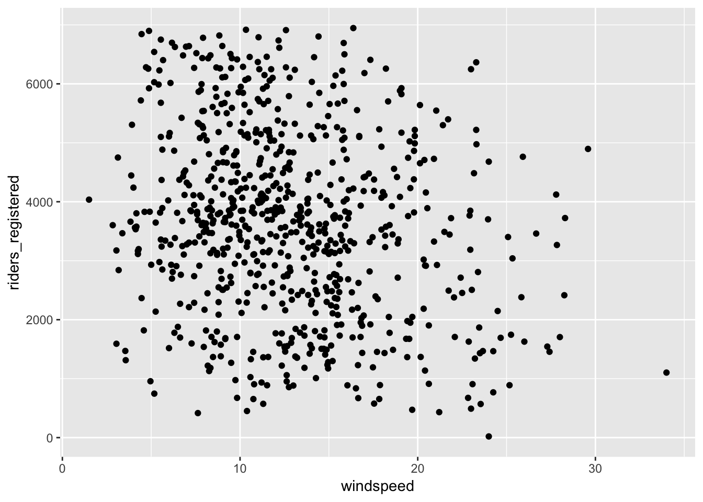
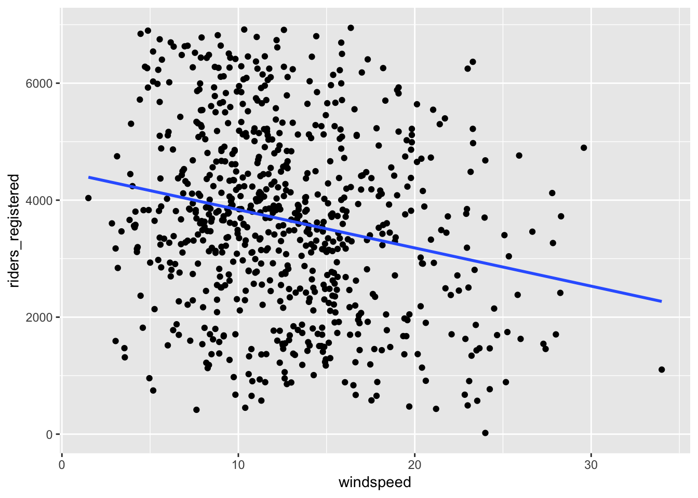
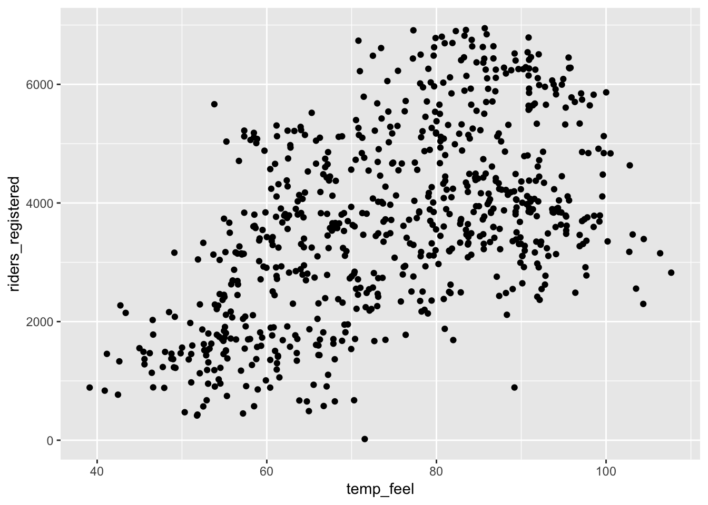
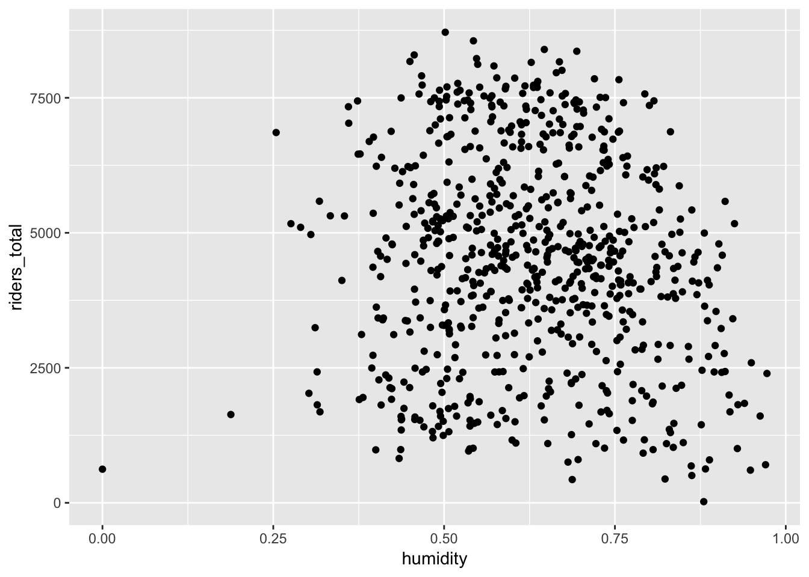

5 Linear Regression
Author: Christina Knudson
5.1 Goals
In this module we’ll focus on the “Model” and “Communicate” steps in the data science workflow. We’ll also call on your understanding of data visualization and transformation.

This chapter will cover how to do the following:
- Fit simple linear regression models
- Plot and interpret the regression results
- Make predictions from regression models
- Test whether two quantitative variables have a linear relationship
R’s lm (linear model) function will be the primary tool used in the chapter.
5.2 Visualize the Data
Recall the bike-share data from the chapter on data visualization. Riding on a windy day can be challenging, but is it actually associated with fewer registered riders? Let’s start by visualizing the data. Since the wind-speed is the predictor, we put it on the x-axis. Let’s use the number of registered riders as the response variable.
library(ggplot2)
bikes <- read.csv("https://www.macalester.edu/~dshuman1/data/155/bike_share.csv")
ggplot(bikes, aes(y = riders_registered, x = windspeed)) +
geom_point()
There may be a slight trend, but this plot doesn’t provide a clear answer, but we can dig in with regression. Our goal is to fit a line to characterize this linear relationship between the number of registered riders and the windspeed.
5.3 Notation and Setup
Recall the equation for a line with intercept \(a\) and slope \(b\) is \[\begin{equation} y = a + b x . \end{equation}\]
The general equation for a simple linear regression model has the following form: \[ \hat{y}_i = \beta_0 + \beta_1 x_i \] where \(x_i\) is the quantitative predictor, \(\beta_0\) is the unknown regression intercept, \(\beta_1\) is the unknown regression slope, and \(\hat{y}_i\) is the predicted response given \(x_i\).
We estimate \(\beta_0\) and \(\beta_1\) using data. This estimation allows us to characterize the linear relationship between \(x_i\) and \(y_i\) in the simple linear regression setting.
Let’s write the regression equation for our bike-share example. The variable name “number of registered riders” is a bit long, so let’s shorten it down to “nriders.” The number of registered riders is our response variable, so we put that on the left-hand side of the equality. The windspeed is our predictor, so we write our regression equation as follows:
\[\widehat{\text{nriders}}_i = \beta_0 + \beta_1 \text{windspeed}_i . \]
Our goal is to use the bike-share data set to estimate \(\beta_0\) and \(\beta_1\).
5.4 Fit a Simple Linear Regression Model
To fit a linear regression model, we use the lm function:
bikemod <- lm(riders_registered ~ windspeed, data = bikes)The first input is the regression formula (Response ~ Predictor) and the next argument is the name of the data set. The lm command estimates the regreesion coefficients and calculates other quantitaties. To find the regression coefficients (i.e. the estimates of \(\beta_0\) and \(\beta_1\)), we can use the coef command. The only input for this command is the model.
coef(bikemod)
## (Intercept) windspeed
## 4490.09761 -65.34145We can now enter these estimates into our linear regression equation: \[\hat{\text{nriders}}_i = 4490.10 + -65.34 \; \text{windspeed}_i \].
5.5 Plot the Regression Line
It’s easy to include the regression line on a scatterplot by adding a geom_smooth() to the ggplot():
ggplot(bikes, aes(y = riders_registered, x = windspeed)) +
geom_point() +
geom_smooth(method = "lm", se = FALSE)
We can see the line is downward sloping. We’ll discuss that in a moment.
5.6 Interpret the Model
First, let’s focus on the sign of predictor’s coefficient ( -65.34). This is a negative number. This tells us that there are fewer registered riders on windier days. That is, the line is downward sloping. If the predictor’s coefficient were zero, there would be no linear relationship between the windspeed and the number of registered riders, and the line would be horizontal. If the predictor’s coefficient were positive, then windier days would have more registered riders, and the line would be upward sloping.
Next, let’s look at the magnitude of the predictor’s coefficient (-65.34). We can interpret this by thinking back to the interpretation of the slope of a line. Every one mile per hour increase in the wind speed is associated with about 65 fewer registered riders. One mile per hour is an imperceptible difference for most people, so let’s think about a 5 mph increase in wind speed. A five mph increase in windspeed is associated with about 323 fewer registered riders.
Finally, let’s look at the y-intercept. The y-intercept is the value of the line when the predictor is 0. We can interpret the y-intercept only if 0 is a plausible value for the predictor AND if we have values around 0 in our data set. The lowest windspeed in our dataset is 1.5 mph, so it’s questionable whether we can safely interpret this. If we decide to interpret it, we’d say that on a day with absolutely no wind (that is, the wind is 0 mph), we expect about 4490 registered riders.
5.7 Calculate Point Predictions
5.7.1 The Type-It-In Method
Let’s use our model to predict the number of riders on a day with 15 mph winds. All we need to do is plug 15mph into the variable windspeed in our regression equation
\(\widehat{\text{nriders}}_i = 4490.10 + -65.34 \; \text{windspeed}_i = 4490.10 + -65.34 * 15 = 3510\).
4490.10 + -65.34 * 15
## [1] 3510Thus, we predict 3510 riders on a day with 15mph winds.
5.7.2 More Reproducible Methods
You can certainly add numbers in R’s console, but a safer (more reproducible) method is to take advantage of some of R’s functions, such as predict. Before you can use predict, you need to create a new data frame with the predictor value. We want to predict for a windspeed of 15 mph, so we specify that in our data frame.
new_windspeed <- data.frame(windspeed = 15 )
new_windspeed
## windspeed
## 1 15Now we can use the predict command. The first input is the model that we want to use for the prediction. We want to use the regression model in bikemod. The second input is the new data frame.
predict(bikemod, new_windspeed )
## 1
## 3509.9765.8 Bonus: Test the Linear Relationship
This section is a bit more advanced, so don’t stress over it. We will cover this in much more detail in the upcoming regression workshop.
Based on the data collected, we found that windier days have fewer riders. Did this result pop up by random chance in this data set, or do windier days truly have fewer riders in general? We can answer this question by conducting a test.
Several methods exist for testing the linear relationship between two variables. One of the easiest ways to conduct our test is to use the summary function. The only input for this function is our model.
summary(bikemod)
##
## Call:
## lm(formula = riders_registered ~ windspeed, data = bikes)
##
## Residuals:
## Min 1Q Median 3Q Max
## -3575.7 -1126.8 -48.3 1089.2 3525.9
##
## Coefficients:
## Estimate Std. Error t value Pr(>|t|)
## (Intercept) 4490.10 149.66 30.002 < 2e-16 ***
## windspeed -65.34 10.86 -6.015 2.84e-09 ***
## ---
## Signif. codes: 0 '***' 0.001 '**' 0.01 '*' 0.05 '.' 0.1 ' ' 1
##
## Residual standard error: 1524 on 729 degrees of freedom
## Multiple R-squared: 0.04728, Adjusted R-squared: 0.04598
## F-statistic: 36.18 on 1 and 729 DF, p-value: 2.844e-09The summary outputs a wealth of information, which can be kind of overwhelming for those without much experience with statistics. To test whether our two variables in a simple linear regression have a linear relationship, look at the number at the very bottom right (labeled p-value).
For our bike example, this number is 2.844e-09, or \(2.844 \times 10^{-9}\). Because the p-value is quite small (and smaller than the “usual” threshold of .05), we conclude that there is indeed a linear relationship between the windspeed and the number of registered riders.
If the p-value were large (perhaps larger than a threshold such as .05), we would say that no linear relationship existed between the windspeed and the number of registered riders.
As a final note, the p-value in the last line matches a p-value in the second row of the coefficients table. In the simple linear regression setting (where you have a single predictor), these numbers match and you can pull the p-value from either place. If/when you move into multiple linear regression, these numbers will no longer match. You can learn more about this on your own or in our upcoming regression workshop.
5.9 Exercises
The first two practice problems uses the bike share data. The last two practice problems use the bechdel data.
library(fivethirtyeight)
data(bechdel)5.9.1 Problem 1
Find the linear relationship between the perceived temperature and the number of registered riders. Then predict the number of riders on a day that feels like 80 degrees F.
5.9.2 Problem 2
Find the linear relationship between the humidity and the number of total riders. Then predict the total number of riders when humidity is at .5 (50 percent).
5.9.3 Problem 3
Use linear regression to predict worldwide (international) gross profits based on domestic gross profits. Use the 2013 adjusted sales. Given the domestic box office gross sales for 12 Years a Slave, predict the movie’s international gross sales. Here’s the domestic gross for 12 Years a Slave in 2013 dollars:
bechdel[3,"domgross_2013"]
## # A tibble: 1 x 1
## domgross_2013
## <dbl>
## 1 531070355.9.4 Problem 4
The intgross and intgross_2013 variables represent the worldwide gross profits of films. To find the non-US (ie foreign) gross profits, you can subtract the domestic gross profits from the international gross profits. Do this (that is, use the mutate function) and use linear regression to predict the non-US (foreign) gross profits for 12 Years a Slave based on the film’s domestic gross profits.
5.10 Solutions
5.10.1 Problem 1
Start with data visualization.
ggplot(bikes, aes(y = riders_registered, x = temp_feel)) +
geom_point()
Next, create the regression model.
biketemp <- lm(riders_registered ~ temp_feel, data = bikes)
coef(biketemp)
## (Intercept) temp_feel
## -667.91568 57.89236Then, write the regression equation. \[ \widehat{\text{riders}}_i = -667.91568 + 57.89236 \, \text{temp}_i \]
For every degree increase in temperature (in F), we expect about 58 additional registered riders. Now, let’s predict the number of registered riders for a day that feels like 80 degrees.
eighty <- data.frame(temp_feel = 80)
predict(biketemp, eighty )
## 1
## 3963.473We expect about 3963 riders.
5.10.2 Problem 2
Start with data visualization.
ggplot(bikes, aes(y = riders_total, x = humidity)) +
geom_point() There may be a downward trend, but there’s a lot of variability.
Next, create the regression model.
bikehumid <- lm(riders_total ~ humidity, data = bikes)
coef(bikehumid)
## (Intercept) humidity
## 5363.986 -1369.081Then, write the regression equation. \[ \widehat{\text{riders}}_i = 5363.986 + -1369.081 \, \text{humidity}_i \]
We need to be a little careful with the interpretation here, because humidity values are between 0 and 1. We can’t increase humidity by an entire unit! Let’s increase humidity by .1 (meaning 10 percentage points. A 10 percentage point increase in humidity is associated with 137 fewer total riders.
newdf <- data.frame(humidity = .50)
predict(bikehumid, newdf )
## 1
## 4679.446We expect about 3963 riders. To be safe, check this number on your plot to make sure that you’re getting something reasonable.
5.10.3 Problem 3
Begin by visualizing the data:
ggplot(bechdel, aes(y = intgross_2013, x = domgross_2013)) +
geom_point()
Next, create the regression model.
moviemod <- lm(intgross_2013 ~ domgross_2013, data = bechdel)
coef(moviemod)
## (Intercept) domgross_2013
## -364528.19765 2.09019Then, write the regression equation. \[ \widehat{\text{int gross}}_i = -364528.19765 + 2.09019 \, \text{domestic}_i \]
Unsurprisingly, there is a positive association between domestic and worldwide gross. A one dollar increase in the domestic gross is associated with a two dollar (and nine cent) increase in the worldwide gross, in 2013 US dollars.
For fun, let’s add the line to our plot.
ggplot(bechdel, aes(y = intgross_2013, x = domgross_2013)) +
geom_point() +
geom_smooth(method = "lm", se = FALSE)
Now, let’s predict for 12 Years a Slave. The domestic gross for this movie was 53107035. Plugging that value into the regression equation produces the predicted worldwide gross profits in US dollars:
twelve <- bechdel[3, "domgross_2013"]
predict(moviemod, twelve )
## 1
## 1106392785.10.4 Problem 4
Begin by creating the new variable.
library(dplyr)
bechdel <- bechdel %>%
mutate(foregross_2013 = intgross_2013 - domgross_2013)Second, visualize the data.
ggplot(bechdel, aes(y = foregross_2013, x = domgross_2013)) +
geom_point() 
Third, create the regression model.
foremod <- lm (foregross_2013 ~ domgross_2013, data = bechdel)
coef(foremod)
## (Intercept) domgross_2013
## -364528.19765 1.09019Then, write the regression equation. \[ \widehat{\text{foreign}}_i = -364528.19765 + 1.09019 \, \text{domestic}_i \]
Let’s interpret this regression equation for fun. First, can we interpret the intercept? No, because none of the films in our data-set have a domestic gross profit of 0 USD, as you can see in the summary below.
bechdel %>% select(domgross_2013) %>% summary()
## domgross_2013
## Min. :8.990e+02
## 1st Qu.:2.055e+07
## Median :5.599e+07
## Mean :9.517e+07
## 3rd Qu.:1.217e+08
## Max. :1.772e+09
## NA's :18Fine, we can’t interpret the intercept. Let’s interpret the slope then. First of all, the slope is positive, which makes sense: films that make money in the US probably tend to make money in non-US markets, too. (If the slope were negative, this would mean that films that are more lucrative in the US are less lucrative in foreign markets.) Now let’s check out the magnitude of the slope: 1.09. For every additional dollar of profit in the US, we expect the film to make an additional 1.09 USD profit in foreign markets.
Next, predict the foreign gross profit in 2013 dollars for 12 Years a Slave:
predict(foremod, twelve)
## 1
## 57532243